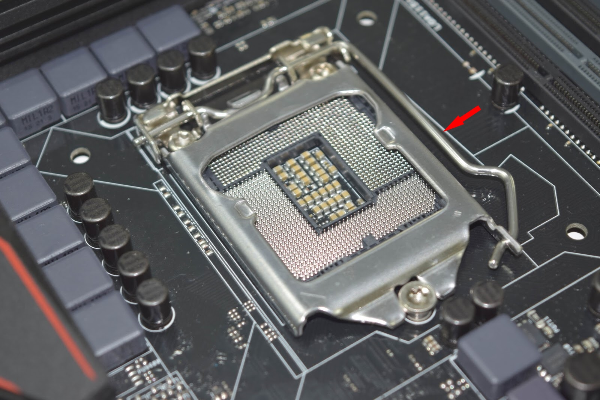
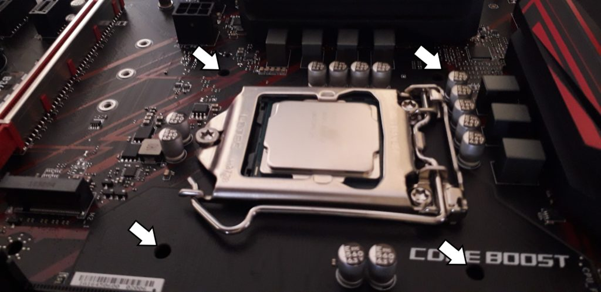

CPU - CENTRAL PROCESSING UNIT
Questo è il socket, ovvero dove andremo a posizionare la Cpu ed il dissipatore dedicato.

Prima di installare la Cpu dovremo aprirlo. In questo caso, prendendo per esempio il
socket LGA 1151 della Intel, basterà alzare la levetta laterale indicata per scoperchiare
il socket ed inserire la Cpu. Per le Cpu AMD il procedimento è comunque molto simile.
Per inserire la Cpu nel verso corretto sono solitamente riportate una freccia in un
angolo della Cpu ed un puntino al bordo del socket sulla scheda madre. Per
individuare il verso univoco in cui questa deve essere inserita basterà posizionare
quest'ultima in modo che la freccia stia indicando il puntino.
A questo punto bisogna applicare la pasta termica, solitamente in dotazione alla Cpu
o preapplicata direttamente sul dissipatore. Nel caso non sia preapplicata, non c'è una
tecnica giusta per usarla, basta spalmare un velo sottile con un dito o lasciarne un
puntino al centro, in modo che si allarghi quando verrà installato il dissipatore.

A questo punto chiudiamo il socket abbassando ed incastrando l'apposita leva e
procediamo all'installazione del dissipatore. Prima di tutto individuiamo i quattro fori
posti sulla scheda madre in cui il dissipatore andrà inserito.
Ora basta appoggiare il dissipatore sopra la cpu facendo combaciare i fori sulla
scheda madre con i "chiodi" del dissipatore ed infilare quest'ultimi con un po' di
pressione, girandoli poi nella direzione opposta della freccia per bloccarli.